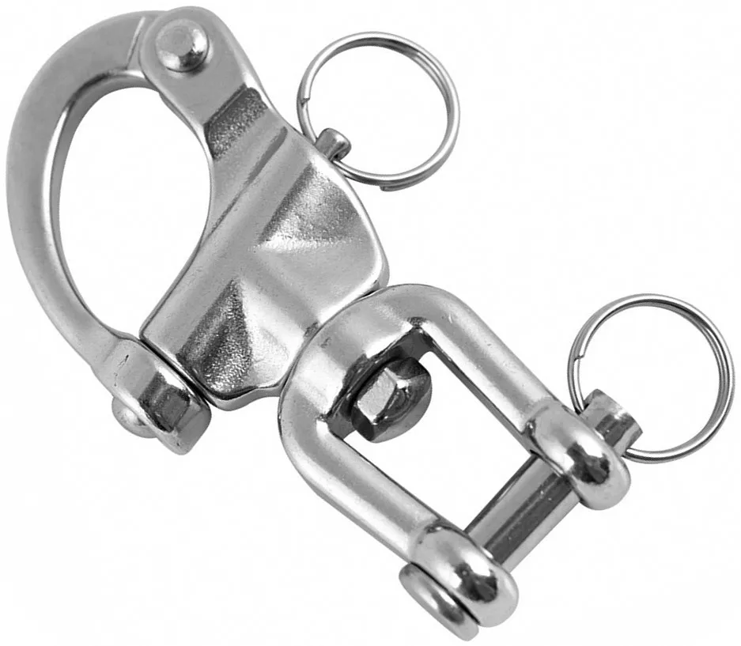

Карабин отцепной
Нержавеющий карабин с функцией дистаннционного открытия.
Видео работы
Принцип работы
Вертлюжная вилка позволяет карабину свободно вращаться для удобного позиционирования и предотвращения скручивания гибких связей. Вертлюг обеспечивает свободное вращение, позволяя принимать оптимальное положение в процессе работы. Форма: скоба типа «Пеликан» с откидной защелкивающейся дужкой. Быстрый отцепление при помощи штифта с чекой. Вилка: с пальцем и шплинтом (защита от выпадения). Создан для работы в условиях высокой влажности, брызг морской воды, химических сред, на открытом воздухе.
Назначение
Нержавеющий отцепной карабин с вилкой арт. 8262 – это универсальное соединительное звено для применения на катерах и яхтах, в походах, при занятии дайвингом, серфингом и везде, где требуется быстрый выпуск. Его можно использовать для пристегивания динамически движущихся и вращающихся грузов, веревок, фалов. Подходит для фалов, спинакеров, в качестве крепления к рюкзакам, сумкам и других целей в спорте и промышленности.
Характеристики
Материал
А4/AISI-316
Покрытие
Полировка
Разрывная нагрузка
от 780 до 1800 кг
Выдерживает температуры
от -60°C до +400°C
Размерный ряд
70
87
132
Перейти на раздел сайта